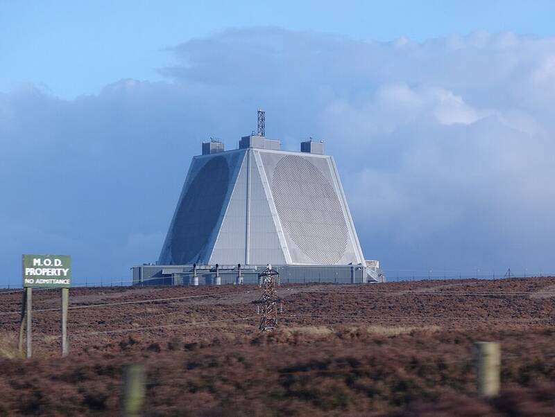

RAF Fylingdales
North Yorkshire, England

A British radar station that gives early warning of missile launches and tracks satellites, sharing data with the U.S. 1
Open in the interactive Watcher
Sources
- RAF Fylingdales Wikipedia
North Yorkshire, England

A British radar station that gives early warning of missile launches and tracks satellites, sharing data with the U.S. 1
Open in the interactive Watcher